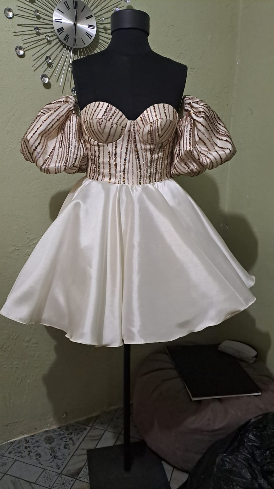

Jane.M Atelier, Maseru, Lesotho
Bridesmaid dresses
with character.
Made-to-measure bridesmaid dresses by Jane.M Atelier in Lesotho, considered around the wedding palette, each wearer and the day ahead.
Book a consultation
Bridesmaid dresses can honour a wedding palette while still allowing each wearer to feel comfortable and considered. Jane.M Atelier creates made-to-measure directions that work together in photographs without relying on one fixed silhouette for everyone.
Bring the wedding date, colour direction and any guidance from the couple. Jane.M can discuss neckline, sleeve, length and coverage choices with each wearer, while keeping the overall look cohesive for the celebration.
Measurements, comfort and movement are part of the conversation, particularly for a long day of ceremony, photographs and celebration. Fabric is selected separately to suit the design and budget, then the agreed direction moves into fitting and finishing.
Free personal styling
Not sure what to wear?
Use the free Jane.M Style Studio to plan outfits around clothes you already own. No purchase, booking or sign-up is required.
Your next move
Plan your next step
Consultation notes
Questions, answered.
Can each bridesmaid have a different silhouette?
Jane.M can discuss individual fit and comfort while keeping the colour direction and overall finish cohesive.
What should we bring to consultation?
Bring the wedding date, palette, any couple guidance and inspiration that helps explain the intended mood.
Can Jane.M help with fabric selection?
Yes. Fabric is selected separately to suit the agreed design and budget.